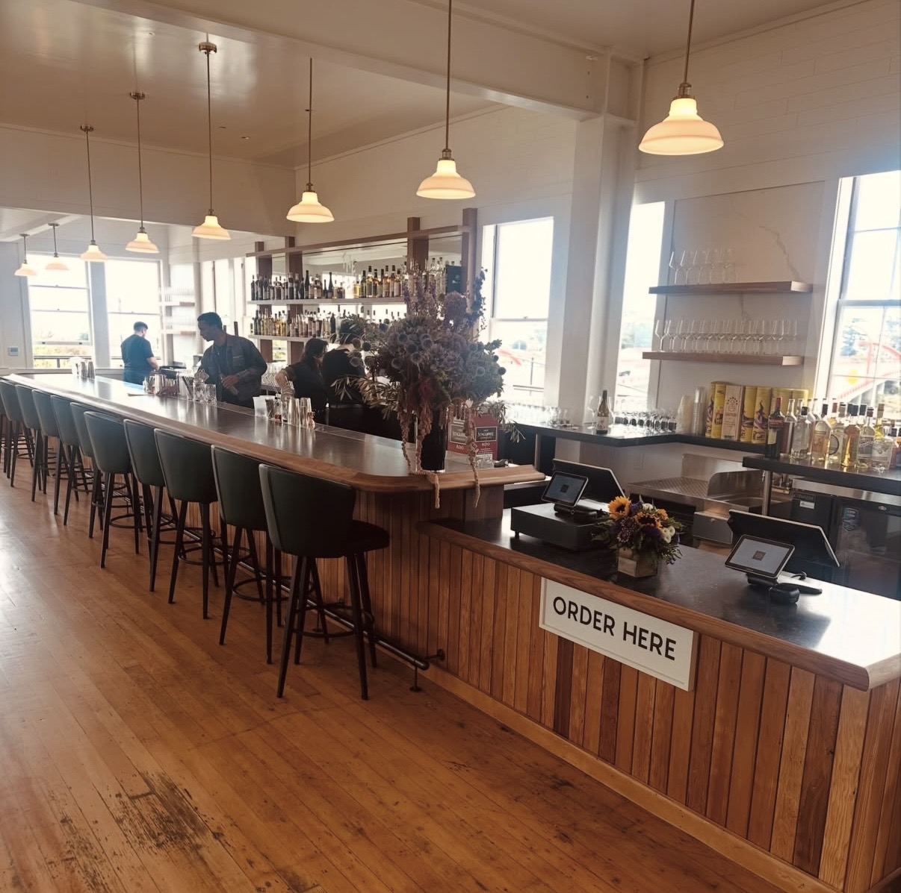

Building New Millwork Inside the Oldest Athletic Club in America

On May 6, 1860, twenty-three charter members founded the San Francisco Olympic Club in the backyard of two Gold Rush-era artists. It is the oldest athletic club in the United States, its roster once counted Mark Twain and Leland Stanford as members, and its City Clubhouse has stood at 524 Post Street, a block off Union Square, since long before most of San Francisco's skyline existed. Champion's Bar sits inside it.
The Real Problem
A 160-year-old institution doesn't get to look like it was built last year, and it doesn't get to look tired either. Millwork inside a clubhouse this old has to do something most commercial fixtures never have to: read as though it has always belonged there, while actually performing to a modern bar's daily standard.
The High-Leverage Move
[Placeholder, not written yet.] This is where Ridgecrest names ONE specific decision and explains it in real technical language, not a list of everything that happened. For Champion's Bar, that's likely something concrete about the bar counter material, the finish matching, or a joinery choice, whatever the actual answer is. Written honestly once there's a real answer to put here, not invented to sound plausible.
Whatever that decision was, it's still standing today, inside a building that has outlasted three centuries of San Francisco history around it, doing the same job it was built to do.
Working in a building with real history behind it? Start a project.